QNS—Quantity Not Sufficient in Sample Tube
Uncapped / Open Tube – Assay Processing Flag
Complaint Description
QNS = quantity not sufficient in the sample tube.
QNS requires level sense, so it only applies to open tube (uncapped) work flows.
QNS will be applied to the test order when fluid level is too low in sample tube, which is measured at the sample bay.
It is normal for LLDHeight associated with QNS to be greater than a successful aspiration. The reason for this is due to implementation: during assay processing, pipettor aspiration and level sense commands are tied together.
Pipettor will detect level of fluid and immediately determine if enough fluid is present:
- Not enough fluid, then immediately report height of detected fluid. Aspiration is cancelled.
- Enough fluid, then report final position of pipettor at the end of aspiration.
Data should be generated as follows:
-
C-LLD curve file, as sensor is turned on as pipettor moves towards fluid.
-
Based on detection result, fluid height is checked by software and recorded in both:
- C-LLD
- LLDHeight
-
Aspiration curve file, if fluid level was acceptable.
QNS failure modes
- Insufficient fill volume
- Too many replicates assigned to sample
- Damaged tip, inconsistent tip length or non-conductive
- Pipettor teach
QNS - fill volume
She is using the open cap workflow, and they pipette the lysis buffer and sample into the tube. She mentioned that they look at the samples, and volume looks okay. This happened the other day too, with a different operator, so she doubts it is pipetting issue.
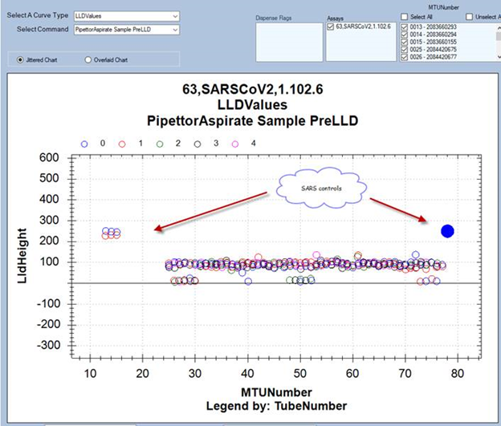
Samples with QNS flag are here (see bold circles below), which seem to be in the middle of those that are acceptable.
If one looks, there are samples which are showing lower, and they are not flagged. Can someone explain this?
Answer: Liquid level height is reported as follows:
1. If detected liquid level meets software minimum acceptable volume, then report final pipette position after aspiration is completed.
2. If detected liquid level is less than software minimum acceptable volume, then report detected volume.
Looking at the following table, sorting by LldHeight:
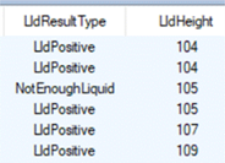
All of the LldPositive values are reporting final pipette position AFTER aspiration of sample.
While the NotEnoughLiquid is reporting the liquid level BEFORE aspiration occurs.
Inspecting the LldHeight closely, software is likely using 106 as the cutoff as LLDResult = NotEnoughLiquid is reported with LLDHeight = 105.
Scrolling through the remaining values, the lowest reported LldHeight value is 7.
For this assay version, build the inferred minimum amount of liquid aspirated from the sample tube in steps is 106 -7 = 99.
That means fluid is detected around 99 steps above the reported LLDHeight for LLDPositive results.
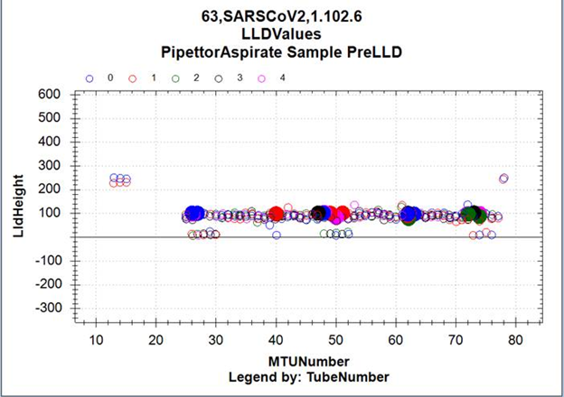
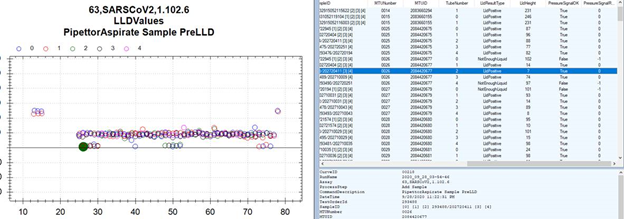
Also, I note that samples are checked twice. Please see the associated error in messages. What are the actual checks that are performed in the sample tube? Note: I also see that in many cases, the sample is retested, and gets a valid result afterwards (see run report attached). Can someone shed any light on this?
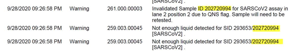
Lastly, here are the c-lld curves for TCR and sample, in case this assists. C-lld for TCR looks fine, so likely not instrument HWF…
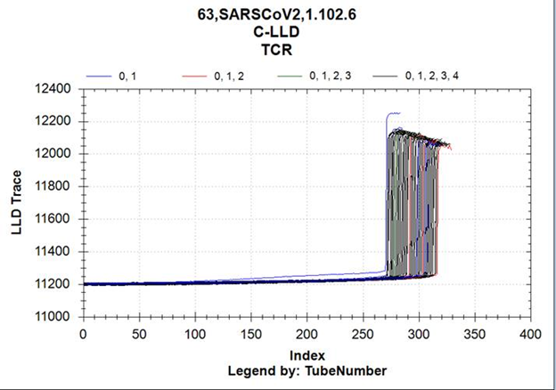
Here is the c-lld for SARS samples. I am noticing that each sample has two curves (see example in second curve below).
Any assistance understanding this would be great. How are we supposed to say whether issue is instrument, or volume too low? One thing we can ask is that they are using correct tubes, that is, according to the specs, as this might make a difference.
ALL SARS samples
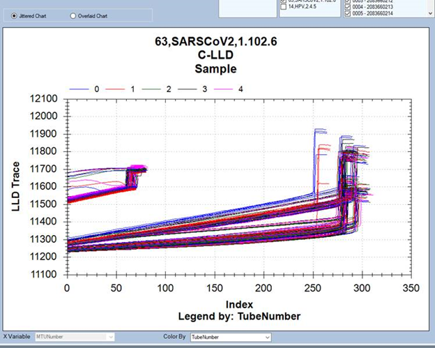
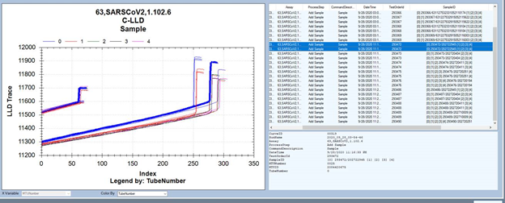
Liquid level height is reported as follows:
- If detected liquid level meets software minimum acceptable volume, then report final pipette position after aspiration is completed.
- If detected liquid level is less than software minimum acceptable volume, then report detected volume.
Looking at the following table, sorting by LldHeight:
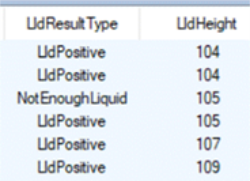
All of the LldPositive values are reporting final pipette position AFTER aspiration of sample.
While the NotEnoughLiquid is reporting the liquid level BEFORE aspiration occurs.
Inspecting the LldHeight closely, Software is likely using 106 as the minimum required LldHeight.
The lowest LldHeight value is 7.
This suggests the amount of liquid aspirated for the sample reaction is 106-7 = 99.
So for LldHeight for LldPositive results, the actual detected liquid level height BEFORE sample is aspirated is approximately 99 steps higher than reported.
Also, there will be some error in measurement – this mean the NotEnoughLiquid = 105 is measured say 5 times can give a range from 10 steps [0.5mm] (due to minute differences in tip length, software timing, motor/pipette meshing). In other words, that is the likely reason running the sample again, the instrument is able to pipette the sample.
- C-lld traces looks the way they do because the “C-LLD” graph doesn’t break out the Aspirate v Dispense measurements. Also, the measurements are performed roughly 12 seconds apart.
There are two sets of C-LLD curves, because for the uncapped work flow, the Sample pipettor does two cLLDs for each sample - the first one is in the sample tube before aspiration, and the second one is after the dispense in the MTU. The smaller group on the left is the level senses after dispense in the MTU. The other set is the level sense in the Sample Tube.
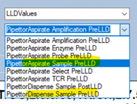
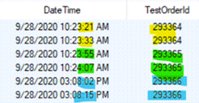
- I agree, the TCR c-lld traces look good, which means not a HW issue. And yes, tube variation and different pipette tips can affect volume.
Question, did customer inspect volume before loading sample on, or after running sample on the instrument?
Because if inspected after running sample on the instrument, it would be difficult to tell.
Using the rough 99 steps is pipetted volume suggests customer would be looking for roughly 5mm difference in fill volume.
QNS - too many replicates
For this customer, inspection of LLDValues curve file showed multiple test orders assigned to same sample ID.
Sample ID is a unique tube identifier and customer is not running samples with same barcode.
Sample ID = 11111, has five test orders 134,147,160,161 and 187 assigned.
When LldResultType = LldPositive , aspiration step is performed and LldHeight is reflects after fluid has been aspirated.
When LldResultType = NotEnoughLiquid, QNS flag is assigned and aspiration not performed.
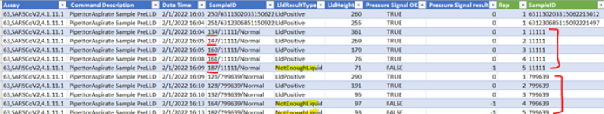
Correct by setting appropriate number of replicates:
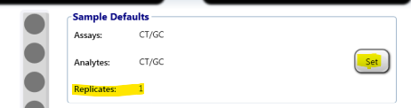
Technical Support
Sample Tube Empty
Resolution
-
Check intended sample replicates matches setting in software.
-
Inspect fluid volume in sample tube with QNS errors.
- Customer inspection of QNS sample tube against sample tubes with no errors, verify fluid.
- Inspect LLDvalues curve file.
-
Check tips:
- Approved tips
-
Damaged tips
- Inspect tips loaded in trays.
- Inspect tip packaging for damage.
- Inspect sample bay cover causing bent tips.
Test
Verify QNS issue has been resolved by running new samples.
Field Service
- Check sample bay cover.
- Save coordinate.coo file and verify pipettor sample bay teach points.
- Correct teach and transfer coordinates.
- Verify QNS issues has been resolved by running new samples.
 button at the top of the page to send feedback, comments, or change requests.
button at the top of the page to send feedback, comments, or change requests.